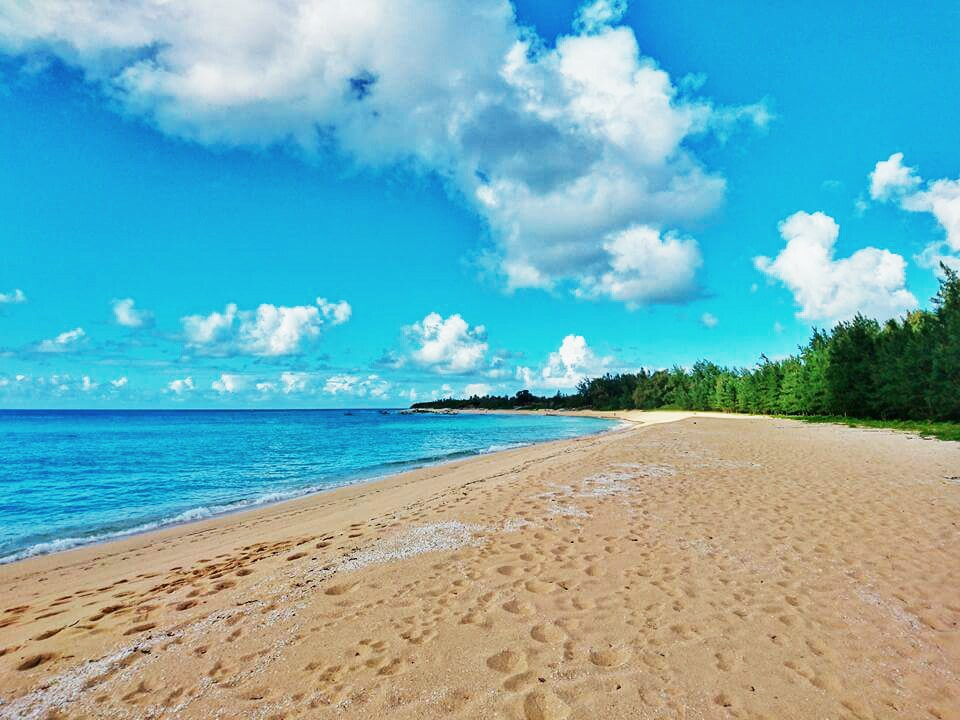
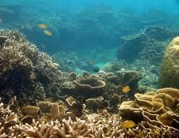
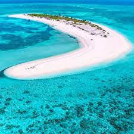
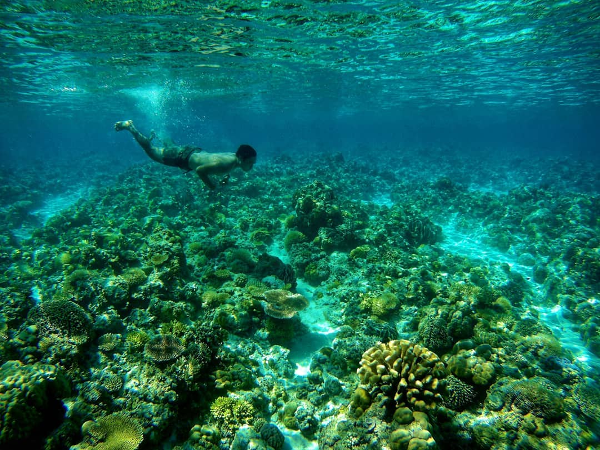
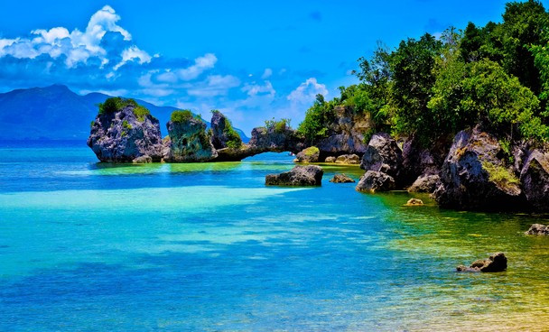
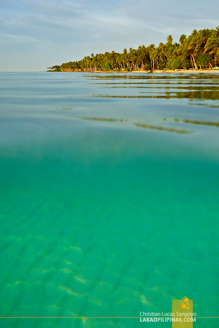
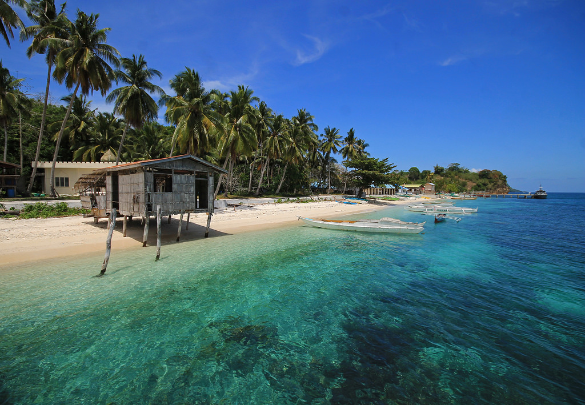

Jomalig Island (Quezon Province)


Jomalig is a unpopular island municipality in Quezon Province.
It boasts of gold and white beaches, the reason why many travelers call it a desert paradise in the middle of the ocean.
Seco Island (Antique)


The Seco Island is a serene and uninhabited island located nearby west of Panay.
It’s basically an island made of white sand stretching 1.5 kilometers in the middle of the ocean. The island paradise was named after the Kinaray-a word for “elbow” due to its shape.
It’s basically an island made of white sand stretching 1.5 kilometers in the middle of the ocean. The island paradise was named after the Kinaray-a word for “elbow” due to its shape.
Corcuera Island


Corcuera is a virgin island municipality in Romblon and home to white sand beaches that could rival Boracay’s.
Locals still refer to it as Simara, the island’s old name when it was still part of Banton town. It was later renamed in 1931 to honor Spanish Governor General Hurtado de Corcuera who ruled the country from 1635 to 1644.
Locals still refer to it as Simara, the island’s old name when it was still part of Banton town. It was later renamed in 1931 to honor Spanish Governor General Hurtado de Corcuera who ruled the country from 1635 to 1644.
Quezon Beach (Patikul, Sulu)


Quezon Beach situated in Patikul, Sulu is a non-commercialized tourist destination known for its fine sand and crystal-clear waters.
It is considered as one of the best beaches in the country - some even say its better than the world-renowned ‘Boracay’.
It is considered as one of the best beaches in the country - some even say its better than the world-renowned ‘Boracay’.